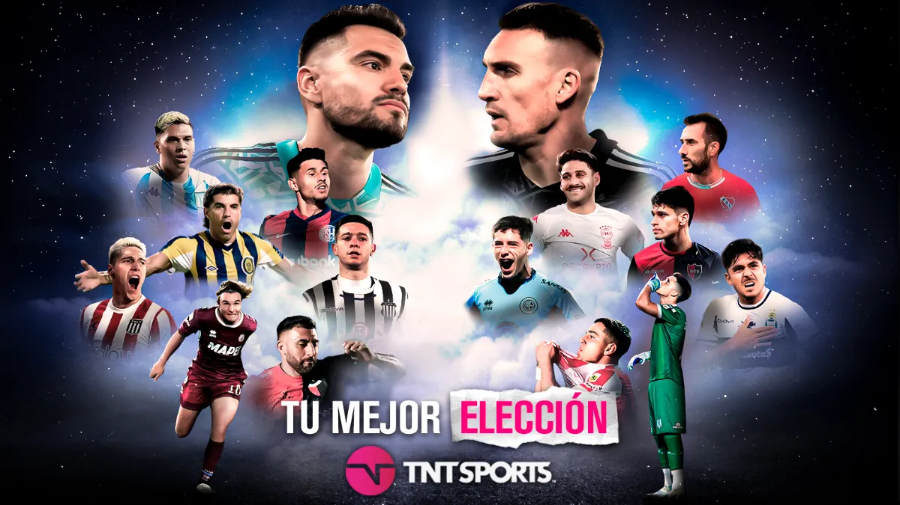

FECHA DE LOS CLASICOS
¿Cuándo se juegan los clasicos 2023? Días y horarios para la fecha de los clásicos en la Copa Liga Profesional 2023. La jornada se disputará del viernes 29 de septiembre al lunes 2 de octubre: el Superclásico entre Boca y River irá el domingo, mientras que Racing vs. Independiente se disputará el sábado...
Leer más...